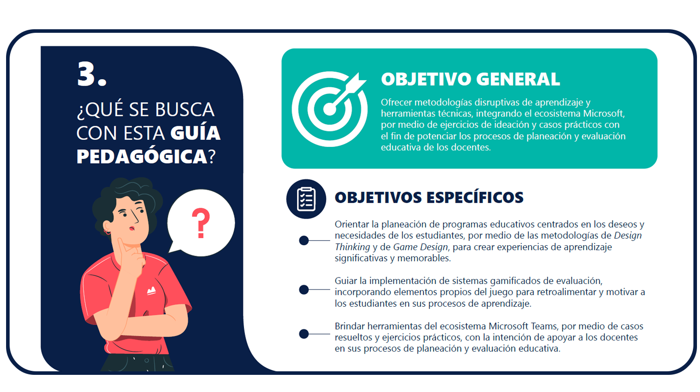

GUÍA PEDAGÓGICA
En este documento encontrarás metodologías disruptivas de aprendizaje y herramientas técnicas que te permitirán integrar el ecosistema de Office 365, por medio de ejercicios de ideación y casos prácticos con el fin de potenciar los procesos de planeación y evaluación educativa de los docentes.
CONTENIDOS
- 1. ¿Qué viene con el regreso a clases 2021?
- 2. ¿Qué medios brindan Microsoft y Critertec Educación con el proyecto Regreso a clases 2021?
- 3. ¿Qué se busca con esta guía pedagógica?
- 4. ¿Por qué diseñar planeaciones educativas enfocadas en los deseos y necesidades de los estudiantes?
- 5. ¿Cómo implementar el Design Thinking integrado con el Game Design en la planeación educativa?
- 6. ¿Por qué diseñar procesos de evaluación enfocados en retroalimentar a los estudiantes?
- 7. ¿Cómo implementar un sistema gamificado de evaluación?
- 8. ¿Qué herramientas del ecosistema Microsoft Teams se pueden implementar en la planeación y evaluación educativa?
- 9. ¿Qué premisas son importantes para implementar las metodologías Design Thinking, Game Design y Gamificación en los procesos de planeación y evaluación educativa?
- 10. ¿Qué referencias bibliográficas se usaron para elaborar esta guía pedagógica?